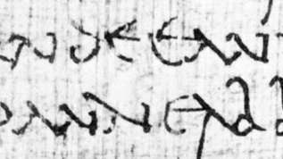

Latin-Alphabet Handwriting
To understand the development of modern Western calligraphy it is important to survey historical writing styles—some of which profoundly influenced subsequent work—as well as how the materials of writing have been used. Most calligraphy is done with pen and ink on paper or parchment, although brushes and chisels are also used for making large letters on various surfaces. Later judgments about how the tip of a pen (usually a quill or reed) was cut, the angle at which it was held, and the formation of individual letters are conjectures based on the evidence of images of people writing, subsequent calligraphic practices, and the letters themselves. Very few artifacts and no treatises on the practice of writing are known to have existed before the 15th century, although instructions and descriptions of quill cutting published in the 16th century probably reflect long-standing practices.
Ancient Roman styles
Rustic capitals
The Latin and vernacular handwriting of western Europe descends in a nearly unbroken line to the present day from the 1st century AD. The script used throughout the Roman Empire for books and occasionally for formal documents is known as rustic capitals. The pen used to write this script was cut with a broad end and held so that its thickest strokes fell at an oblique, nearly perpendicular angle to the line of writing. As is the case for most formal alphabets, the pen was lifted from the writing surface to make the serifs and other strokes for each single letter. The rustic alphabet consists only of capital, or majuscule, letters, most of which are contained between a single pair of horizontal lines. The letters B, L, and F are sometimes taller than the other capitals to distinguish them from R, I, and E, which are similar in appearance.
This elaborate script, whose letter forms were used for inscriptions as well as manuscripts, is called rustic only by comparison with the magnificent square capitals typical of Roman imperial inscriptions. Both styles existed simultaneously, but very few manuscripts written in square capitals survive from ancient times. Square capitals, which require many more separate marks to make a single letter, are more often seen on inscriptions cut with a chisel that copied letters designed with a brush. Brushes were also used for large writing such as that seen in the graffiti in Pompeii.
.jpg)
The business hand of the 1st century, used for correspondence and for most documents, private and official alike, is known as cursive capitals. Here the pen, cut to a narrow point, was held at an oblique angle similar to that used for rustic capitals, but the pen was lifted less often (and the writing was faster). This cursive handling led to new and simpler letter forms such as calligraphy: Latin-alphabet handwriting (two strokes) for D (three strokes) and calligraphy: Latin-alphabet handwriting (two strokes) for E (four strokes). Some of these new forms are in effect minuscule, in that parts of them ascend or descend beyond a pair of lines that define the height of letters such as n or x (e.g., ascending letters such as d and descending letters such as p) instead of maintaining the uniformity in height of square capitals. Cursive capitals were also sometimes joined to following letters, further reducing the number of times the pen was lifted during the writing. This Roman style is hardly considered a calligraphic script, but it demonstrates how a formal alphabet was modified through rapid writing.

From the 2nd to the early 4th century, parchment was replacing papyrus as the standard writing material for books, and the codex was replacing the roll as their standard form. The evidence that survives from this period, during which biblical and other Christian literature was beginning to be copied extensively, is fragmentary, and its interpretation is still controversial. The main line of development, however, is clear enough. The elaborate letter forms of rustic capitals, with their numerous pen lifts, began to be abandoned, and experiments were made with new book hands in which the simplified letter forms of cursive capitals were written with a broad pen, sometimes held obliquely in the traditional way and sometimes held “straight,” so that its thickest strokes fell at right angles to the line of writing. It was probably the use of a straight pen that produced, for example, the conversion of cursive capital calligraphy: Latin-alphabet handwriting (axis oblique) into the fully minuscule d (axis vertical).